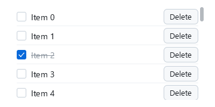
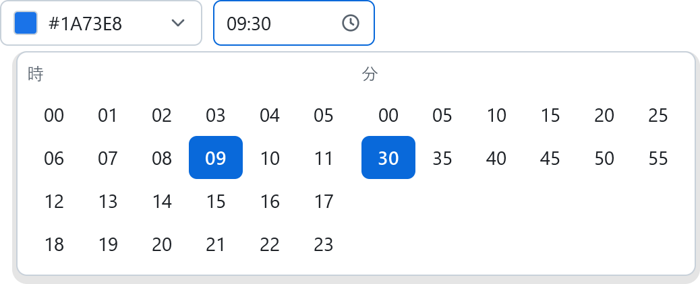

実験レポート 連載 ・ 2026 年 11 月 22 日から（区切りごとに書き足します）
kargui 開発レポート
kargui は、Rust で Windows のデスクトップアプリを書くための、軽い GUI フレームワークです。コードのほとんどは AI（Claude Code）が書き、作者が方向を決めて本物の窓で確かめています。なぜ作ったか、ほかのフレームワークと比べてどうだったかは、作成記録に書きました。この連載では、どう作っているかを書きます。中の仕組み、作って分かったこと、やめた方がいい書き方を、スクリーンショット・図・グラフ・表と一緒に紹介します。

examples/expenses）。本物の窓のスクリーンショット。- 版は 0.2.0（crates.io）。ふつうのデスクトップアプリを kargui だけで書けるところまで来ました。
- GitHub の main には、0.2.0 の後に足したドラッグ＆ドロップ（窓の中と、エクスプローラーから落とすファイル）と、第 6 章の動きの道具、第 7 章の書体、第 8 章の色と時刻の選択が入っています（github.com/dikmri/kargui、MIT ライセンス）。第 9 章の書式付きの文字は、手元の main にあり、まだ GitHub に送っていません。
- 窓を開けるのは Windows 10/11 だけです。Linux と macOS は、試験だけを毎回走らせています。
章の一覧

第 1 章
1 フレームの中で起きること
入力が届いてから画面に出るまで。ビューを何回も呼ぶ理由、前のフレームの配置で当たりを決める理由。

第 2 章
0.1 から 0.2 へ、部品をそろえた順番
13 のフレームワークに学んで足す部品を決め、土台から作った。部品の写真と、足すのにかかった時間。

第 3 章
ふつうのアプリで見つけたこと
メモ帳・家計簿・ファイルの閲覧を書いて見つかった不足と、起動が 14 ms 遅くなった理由。

第 4 章
CI を初めて回した日と 0.2.0
手元で通る試験が CI で落ちた 2 つの理由と、使い方を壊す変更を調べてから版を出す手順。

第 5 章
ドラッグ＆ドロップ
型で受け取る物を決める書き方、エクスプローラーから落とすファイル、本物の窓で見つかった不具合、並べ方の決まり。

第 6 章
動き（アニメーション）
数を 1 つ返す書き方、OS の「アニメーション効果」に従う作り、試験台で動きを切る理由、起動のたびに 6 フレーム描いていた不具合。

第 7 章
書体
Font の 3 つの形と書体の探し方、入力欄の書体が 1 フレーム遅れて伝わる理由、作者の記録から見つけた行の間の不具合。

第 8 章
色と時刻の選択
時刻をます目にした理由、濃淡の面を絵で描く方法、作者の記録から見つけた打つ途中の番号と、引っ張っても選べない入力欄。

第 9 章
書式付きの文字
範囲を表示だけにした理由、1 つの段落として並べて部分ごとに色を付ける仕組み、見えないコードの背景と Linux で落ちた試験。


数で見る kargui
0.1.0（2026 年 11 月 21 日）・0.2.0（11 月 22 日）・今の main を並べました。軽さの数は、3 つの版のタスク帳を同じ PC で同じ時に、順番を往復させて測った中央値です。日を変えて測ると、PC の状態で 10 ms ほどずれるからです。
| 項目 | 0.1.0 | 0.2.0 | 今の main |
|---|---|---|---|
| コードの行数（crates/kargui/src） | 9,502 | 20,510 | 21,987 |
| 公開の項目（型・関数・欄など） | 345 | 759 | 797 |
| 試験（#[test] の数） | 79 | 176 | 202 |
| 説明の動く例（doctest） | 206 | 520 | 569 |
| ガイドの章 | 9 章 | 17 章 | 19 章 |
| 部品の写真 | 11 枚 | 30 枚 | 31 枚 |
| 見本のアプリ | 5 本 | 8 本 | 9 本 |
| 起動（表示まで、中央値） | 56 ms | 58 ms | 53 ms |
| 1 万件を入れた起動 | 58 ms | 56 ms | 58.5 ms |
| メモリ（起動直後） | 3.7 MB | 3.7 MB | 3.8 MB |
| メモリ（1 万件） | 5.4 MB | 5.5 MB | 5.5 MB |
| 実行ファイル（タスク帳） | 1.07 MB | 1.27 MB | 1.32 MB |
開発の進め方
kargui の開発は、作者と AI が次のように分担しています。AI は区切りでも止まらずに次へ進み、作者は気になった時に方向を変えます。
| すること | 誰が | どうやって |
|---|---|---|
| 何を作るか・順番 | 作者が決め、AI が案を出す | AI が調べて推奨の案と理由を書き、作者が選ぶ |
| コード・試験・説明・ガイド | AI | 試験を先に書き、落ちるのを見てから直す。公開の項目には全部動く例を付ける |
| 軽さの確かめ | AI | 足すたびに組み立て直し、同じ道具で起動とメモリを測る |
| 本物の窓での確かめ | 作者が操作し、AI が記録を読む | 作者は「試した」と伝えるだけ。AI が記録から異常を探して直す（第 3 章） |
| GitHub へ送る・crates.io に出す | 作者が決める | 送るのは作者が言った時だけ。crates.io に出すのは作者 |
窓を開いて確かめる時は、作者の邪魔にならないように、サブモニターに前面に出さずに開いています。何も起きない時間の CPU も、この形で測っています。
commit の年表
kargui の commit を、2 時間ごとの数で並べました。0.1.0 までの段階 0〜4 は作成記録に、その後はこの連載に書いています。
更新の履歴
- 2026 年 11 月 23 日: 第 9 章「書式付きの文字」を書いた
- 2026 年 11 月 23 日: 第 8 章「色と時刻の選択」を書いた
- 2026 年 11 月 22 日: 第 7 章「書体」を書いた
- 2026 年 11 月 22 日: 第 6 章「動き（アニメーション）」を書いた。版ごとの数（表とグラフ）を 3 つの版で測り直した
- 2026 年 11 月 22 日: 第 5 章に「エクスプローラーからファイルを落とす」を書き足した（届く順番で成否が変わった不具合の話を含む）
- 2026 年 11 月 22 日: 連載を始めた。第 1 章〜第 5 章（0.1 から 0.2 と、ドラッグ＆ドロップ）